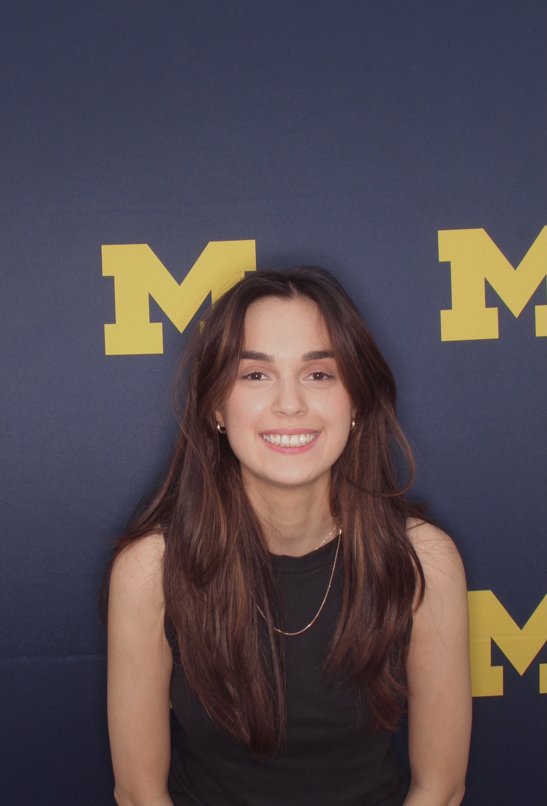

Hi, I am Bahar. Glad to see you here! I am currently a master's student at The University of Michigan studying UX Design. I am interested in photography and always take random photos of things I find beautiful or inspiring.
I am from Baku, Azerbaijan but I have lived in many cities such as Ankara, Savannah, Greenville, Tempe and Ann Arbor. Travelling and living in different cities inspired me to capture memories in each place I go to and started my enthusiasm towards photography.
